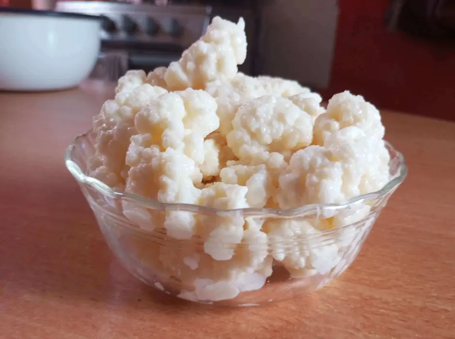

About Kefir
1. What is Kefir?
The term kefir, derived from the Turkish language, means "blessing," which perfectly defines this beverage. It has a very pleasant and nutritious flavor, with a texture similar to yogurt, but more liquid and viscous. It is believed that this drink has been around for thousands of years, particularly in the Caucasus region, located between Eastern Europe and Western Asia.

2. Benefits of Kefir
Thanks to its wide content of bioactive compounds, kefir has the ability to counteract harmful bacteria and microorganisms to health.
Among its most prominent benefits, they can be classified into 3 main categories: digestive health, reduction of bone degeneration, and immune system strengthening.
I. Effects of Kefir on Digestion
Stomach health depends on a delicate balance of existing bacteria. Consuming kefir helps maintain this necessary balance, preventing the formation of stomach ulcers and preventing conditions such as Irritable Bowel Syndrome and Crohn's disease.
According to studies conducted on the benefits of probiotics against gastrointestinal diseases, kefir is positioned as an excellent ally for stomach health. It is also capable of restoring gut flora that has been affected by antibiotic intake.
II. Effects of Kefir in Reducing Bone Degeneration
The high intake of calcium, magnesium, vitamin D, and phosphorus provided by consuming kefir benefits the body's skeletal system and slows down its degeneration. On the other hand, containing vitamin D also promotes better calcium absorption and strengthens bone density.
III. Effects of Kefir in Strengthening the Immune System
Biotin and folate are two nutrients that stand out in kefir's composition. Thanks to these nutrients, it is capable of acting as a fortifying agent for the immune system against viral and bacterial attacks, proven through well-founded studies in health research.
Kefir also contains a probiotic strain called Lactobacillus. This strain is responsible for counteracting bacteria such as E. coli and Salmonella, inhibiting their effect and spread.
Another exclusive compound in kefir is kefiran, an insoluble polysaccharide capable of combating Candida Albicans bacteria, as well as reducing bad cholesterol and regulating blood pressure.
3. Nutritional Information of Kefir
Below is the nutritional value provided by kefir in a 100 g serving:
- Calories: 64 kcal
- Protein: 3.3 g
- Fat: 3.5 g
- Calcium: 127 mg
- Vitamin A: 30.0 g
- Carbohydrates: 4.8 g
4. Properties of Kefir
Among the most outstanding properties of kefir, we have:
- Its acidity levels help balance glucose.
- As a probiotic, it regenerates gut flora.
- Relieves lactose intolerance disorders.
- Normalizes intestinal transit, preventing constipation.
- Proves to be an excellent cleanser by eliminating toxins.
- Supports nutrient absorption from other consumed foods.
- Provides an antioxidant and revitalizing effect.
- It is an outstanding natural diuretic.
5. Uses of Kefir
Kefir is widely used in the culinary field, especially due to its ease of homemade preparation. However, it can also be purchased pre-made in retail stores.
Kefir can be categorized into 3 types:
- Milk Kefir
- Water Kefir
- Tea Kefir
All 3 types share the same microflora; what varies is their application depending on the case or need.
Among the most well-known commercial presentations of kefir, we have:
- Natural Kefir: Made solely from pasteurized sugar-free milk.
- Fruit Kefir: Natural kefir combined with mango, blueberries, strawberries, etc.
- Cereal or Nut Kefir: A nutritious presentation preferred for diets.
- Goat Milk Kefir.
- Kefir with Honey.
Homemade preparation of milk kefir is very similar to making homemade yogurt. You will only need a starter culture of kefir grains (100 g) and 1 liter of whole cow or goat milk according to preference.
Using airtight glass jars for storage is recommended. It is estimated that in approximately 24 hours at room temperature and away from direct sunlight, it should be ready.
Finally, it is strained to separate the liquid kefir from the kefir grains. Metal utensils should be avoided when preparing kefir.
6. References
- Castañeda Guillot, Carlos. (2018). Probiotics updated: an update. Cuban Journal of Pediatrics, 90(2), 293-298. Retrieved February 18, 2023, from http://scielo.sld.cu/scielo.php?script=sci_arttext&pid=S0034-75312018000200006&lng=es&tlng=es.
- Rodríguez Huertas, Jesús, Rodríguez Lara, Avilene, González Acevedo, Olivia, & Mesa, María Dolores. (2019). Milk and dairy products as vehicles for calcium and vitamin D: the role of fortified milks. Hospital Nutrition, 36(6), 962-973. Epub February 17, 2020. https://dx.doi.org/10.20960/nh.02570
- Bermejo López, Laura María, Aparicio, Aránzazu, Loria Kohen, Viviana, López-Sobaler, Ana M, & Ortega, Rosa M. (2021). Importance of nutrition in immune defense. Role of milk and its natural components. Hospital Nutrition, 38(spe2), 17-22. Epub November 01, 2021. https://dx.doi.org/10.20960/nh.3711
- Flores Peredo, Lucía, & Zarain Herzberg, Ángel. (2016). Role of a fiber-rich diet in cancer prevention and treatment: targeted therapy for intracellular calcium management. Journal of the Faculty of Medicine (Mexico), 57(5), 86-91. Retrieved February 13, 2023, from http://www.scielo.org.mx/scielo.php?script=sci_arttext&pid=S0026-17422016000500086&lng=es&tlng=es.